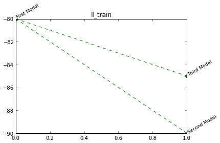

The NI Toolbox contains python versions of commonly used functions to deal with spike data. Get the pdf version here
Contents:
To install the toolbox, clone the git repository, or download the zip file from: https://github.com/jahuth/ni
Clone the repository with:
git clone https://github.com/jahuth/ni.git
In the repository the toolbox, default configuration, the documentation and example files are included. If you have the necessary packages installed, you can start using it right away.
If you lack any of the following packages, you might want to install them (with eg. pip)
ipython matplotlib scipy numpy pandas scikit-learn statsmodels
This code can be executed in an ipython notebook (to be used in your browser) or qtconsole.
To start a notebook:
ipython notebook --pylab=inline
To start the qtconsole:
ipython qtconsole --pylab=inline
This will load matplotlib functions for easy plotting and even provide many aliases that use names similar to the ones used in matlab.
The most basic example (if a path to the data is set and accessible) of how to use the toolbox is:
import ni
data = ni.data.monkey.Data(condition = 0)
model = ni.model.ip.Model({'cell':4,'crosshistory':[6,7]})
fm = model.fit(data.trial(range(data.nr_trials/2)))
plot(fm.prototypes()['rate'],'k')
The first line loads data from the monkey module with the default filename. The second line creates a model for cell 4, using 6 and 7 as crosshistory dependencies. Then the model is fitted on half of the data and the rate component is displayed.
If no data is available, some can be generated with the net_sim module:
import ni
conf = ni.model.net_sim.SimulationConfiguration()
conf.Nneur = 10
conf.Ntrials = 100
r = ni.model.net_sim.simulate(conf)
print r.data
Will output:
Spike data: 1 Condition(s) 100 Trial(s) of 10 Cell(s) in 1000 Time step(s). No other data.
The data can then be used with a model:
model = ni.model.ip.Model({'cell':4,'crosshistory':[6,7]})
fm = model.fit(data.trial(range(data.nr_trials/2)))
fm.plot_prototypes()
If the nltk (http://nltk.org/) is installed, you can also generate data like this:
import ni
import numpy as np
import pandas
from nltk.corpus import genesis
from ni.model.pointprocess import getBinary
trial_length = 1000 # use blocks of this many characters as a trial
d = []
index_tuples = []
for (condition, txt_file) in enumerate(['english-kjv.txt','finnish.txt','german.txt','french.txt']):
s = genesis.raw(txt_file).replace('.\n',' ').replace('\n',' ').replace('.',' ') # to make the end of sentences also ends of words
for t in range(len(s)/trial_length):
for (cell, letter) in enumerate([' ', 'a', 'e', 'i']):
d.append(list(getBinary( np.cumsum([len(w)+1 for w in s[(t*trial_length):((t+1)*trial_length)].split(letter)]) )))
index_tuples.append((condition,t,cell))
index = pandas.MultiIndex.from_tuples(index_tuples, names=['Condition','Trial','Cell'])
data = ni.Data(pandas.DataFrame(d, index = index))
model = ni.model.ip.Model({'history_length':10, 'rate':False})
for condition in range(4):
fm = model.fit(data.condition(condition).trial(range(50)))
print str(condition)+': ' + ' '.join([str(fm.compare(data.condition(i).trial(range(50,100)))['ll']) for i in range(4)])
To add a designmatrix component to the default model, include it in the custom_components list of the configuration.:
import ni
data = ni.data.monkey.Data(condition=0)
long_kernel = ni.model.create_splines.create_splines_linspace(data.nr_trials * data.trial_length,5,False)
ni.model.ip.Model({'custom_components': [ ni.model.designmatrix.Component(header='trend', kernel=long_kernel) ]})
An example of adding something to a StatCollector:
import ni
stat = ni.StatCollector()
stat.addNode("Model 0", {'name': 'First Model',
'll_test': -240,
'll_train': -80,
'complexity':10})
stat.addNode("Model 0/1", {'name': 'Second Model',
'll_test': -100,
'll_train': -90,
'complexity':14})
stat.addNode("Model 0/2", {'name': 'Third Model',
'll_test': -130,
'll_train': -85,
'complexity':14})
stat.plotTree('ll_train')
Will output:
Mostly, the output of ni.tools.bootstrap functions will be added to the StatCollector, containing all the important information.